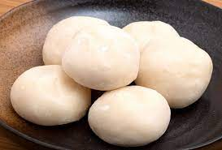

Mochi

Description:
Ingredients
- 1 cup sweetened red bean paste
- 1 cup glutinous rice flour
- 1 teaspoon green tea powder (matcha)
- 1 cup water
- ¼ cup white sugar
- ½ cup cornstarch, for rolling out the dough
Directions
- Gather all ingredients.
- Wrap red bean paste in aluminum foil and place in the freezer until solid, at least 1 hour.
- Mix glutinous rice flour and green tea powder thoroughly in a microwave-safe bowl.
- Stir in water, then sugar; mix until smooth.
- Cover the bowl with plastic wrap and microwave for 3 minutes 30 seconds.
- Meanwhile, remove red bean paste from the freezer and divide into 8 equal balls. Set aside.
- Remove rice flour mixture from the microwave. Stir and heat, covered, for another 15 to 30 seconds.
- Dust a work surface with cornstarch. Roll about 2 tablespoons of hot rice
flour mixture into a ball. Flatten the ball and place one ball of frozen red bean paste in the center.
Pinch and press the dough around the bean paste until completely covered.
- Sprinkle with additional cornstarch and place mochi,
seam-side down, in a paper muffin liner to prevent sticking.
- Repeat Step 6 to make remaining mochi.
- Enjoy!
Return main page: Main